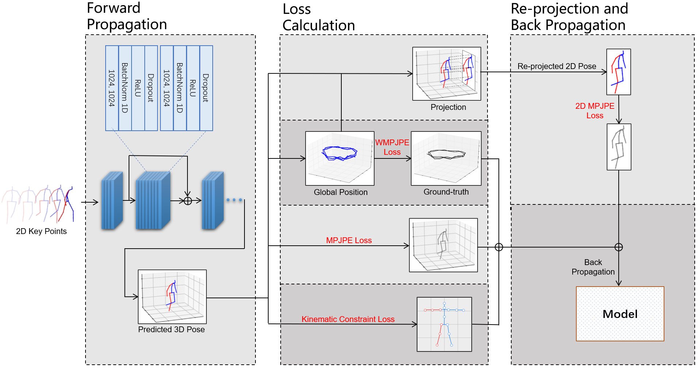

Publication on ICSM-2022
I and my teammates Zihan Wang and Ruimin Chen proposed a new method about human 3D pose estimation, SPGNet: Spatial Projection Guided 3D Human Pose Estimation in Low Dimensional Space, and published it on ICSM-2022.
SPGNet mixes multi-dimensional re-projection into supervised learning. In this method, the 2D-to-3D-lifting network predicts the global position and coordinates of the 3D human pose. Then, we re-project the estimated 3D pose back to the 2D key points along with spatial adjustments. The loss functions compare the estimated 3D pose with the 3D pose ground truth, and re-projected 2D pose with the input 2D pose. In addition, we propose a kinematic constraint to restrict the predicted target with constant human bone length. Based on the estimation results for the dataset Human3.6M, our approach outperforms many state-of-the-art methods both qualitatively and quantitatively.

Acknowledgement: I would like to express my special thanks of gratitude to Guanfang Dong, and our professor Anup Basu.
Last Update: 2022-09-01